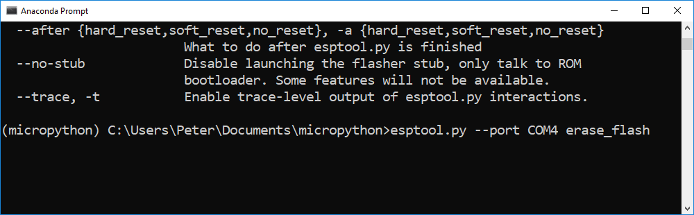

Installing MicroPython
Installing MicroPython
MicroPython is a port of the Python programming language that runs on small, inexpensive microcontrollers. In this section, you will learn how to install MicroPython on an ESP8266-based microcontroller such as the Adafruit Feather Huzzah ESP8266 and the ESP8266 NodeMCU using Python and a package called esptool. In subsequent sections, you will learn how to control an LED and read a sensor using MicroPython. The following hardware is needed to install MicroPython on an ESP8266-based microcontroller:
| Hardware | Purpose |
|---|---|
| A laptop or desktop computer | install MicroPython on the microcontroller |
| Adafruit Feather Huzzah ESP8266 | microcontroller running MicroPython |
| micro USB cable | connect the microcontroller to computer |
The following software is used to install MicroPython on an ESP8266-based microcontroller:
| Software | Purpose |
|---|---|
| Anaconda distribution of Python | run esptool that installs MicroPython |
| Anaconda Prompt | Install esptool package with pip |
| esptool | A pip installable package used to install MicroPython |
| firmware .bin file | Version of MicroPython run on the microcontroller |
Summary of Steps:
- Install the Anaconda distribution of Python
- Create a new conda environment and
pip install esptool - Download the latest MicroPython .bin firmware file
- Install the SiLabs driver for the Adafruit Feather Huzzah ESP8266
- Connect the ESP8266-based microcontroller board to the laptop using a micro USB cable
- Determine which serial port the microcontroller is connected to
- Run the esptool to upload the .bin firmware file to the microcontroller
- Download and install PuTTY, a serial monitor
- Use PuTTY to connect to the microcontroller and run commands at the MicroPython REPL
Install the Anaconda distribution of Python
If you don't have the Anaconda distribution of Python installed already, go to Anaconda.com/download to download and install the latest version.
Create a new conda environment and install esptool
To install MicroPython on the ESP8266-based microcontroller, we will start by creating a virtual environment. A virtual environment is an isolated Python interpreter and a set of packages that are separate from the base version of Python running on your computer. We'll create a new virtual environment with the Anaconda Prompt and the conda command line tool.
Open the Anaconda Prompt and create a new virtual environment named micropython. Activate the environment with the command conda activate. After activating the virtual environment, you should see the virtual environment name (micropython) before the > Prompt. Once inside the virtual environment, use pip to install esptool. esptool will be used to upload the MicroPython .bin firmware file onto the ESP8266-based microcontroller. Confirm that esptool is installed in the (micropython) virtual environment by running the command conda list. The list of commands below also creates a new directory in the Documents folder called micropython to store all the project files.
> conda create -n micropython python=3.6
> conda activate micropython
(micropython) > pip install esptool
(micropython) > conda list
(micropython) > cd Documents
(micropython) > mkdir micropthon
(micropython) > cd micropython
Download the latest MicroPython firmware .bin file
Go to GitHub.com and download the latest .bin firmware file at micropython.org/download#esp8266. Move the .bin firmware file to a new micropython directory. The .bin firmware file is the version of MicroPython that runs on the ESP8266 microcontroller. Straight from the manufacturer, the ESP8266 microcontroller probably does not have MicroPyton installed, so we need to install MicroPython ourselves. After installing the Micropython .bin firmware file onto the board, we will be able to bring up the MicroPython REPL prompt, type commands into the Micropython REPL and run Micropython .py scripts on the board.

Install the SiLabs driver for the ESP8266-based microcontroller
Before we connect the ESP8266-based microcontroller such as an Adafruit Feather Huzzah ESP8266 or ESP8266 NodeMCU to the computer, a specific driver needs to be installed. For Windows 10 laptop to see the board, the CP210x USB to UART Bridge VCP driver needs to be downloaded from SiLabs and installed. The driver download and installation is quick and easy but does require administrator privileges.

Connect the ESP8266-based microcontroller to the computer
Use a microUSB cable (the same kind of cable that charges many mobile phones) to connect the ESP8266-based microcontroller to the computer. Make sure the microUSB cable is a full USB data cable and not just a power only cable. If you have trouble getting the microcontroller to work, one reason might be the micoUSB cable you are using is only a charging cable and can not transfer data.
Determine which serial port the ESP8266-based microcontroller is connected to
Use the Windows Device Manager to determine which serial port the ESP8266-based microcontroller is connected to is connected to. The serial port is one of the parameters which needs to be defined when the .bin firmware file is upload on the board.
Look for something like Silicon Labs CP210x USB to UART Bridge (COM4) in the Ports (COM & LPT) menu of the Windows Device Manager. TCP210x USB to UART Bridge refers to the chip that handles serial communication on the board, not the ESP8266 chip itself. Make a note of the number after (COM ). The serial port number often comes up as (COM4) but it may be different on your computer.


Run esptool to upload the .bin file to the ESP8266-based microcontroller
Open the Anaconda Prompt with the Windows Start Menu and cd(change directory) into the micropython directory which contains the .bin file. Use the dir command to see the micropython directory contents. Make sure the .bin firmware file is in the directory. The .bin firmware file is named something like esp8266-20171101-v1.9.3.bin. Activate the micropython virtual environment with the command conda activate micropython. Run esptool --help to ensure esptool is installed properly. Note there is no .py extension after esptool. On Windows , the command esptool works, but the command esptool.py may not. (Note this behavior is different than the commands shown on the MicroPython docs). If you try to run esptool and you are not in the (micropython) virtual environment, an error is returned.
> cd Documents
> cd micropython
> pwd
Documents/micropython
> dir
> conda activate micropython
(micropython) > esptool --help

Before uploading the .bin firmware file to the ESP8266-based microcontoller, it is best practice to first erase the flash memory on the board using the command esptool erase_flash. Make sure to specify the --port. The argument after --port is the COM port assigned to the ESP8266 board shown in the Windows Device Manager. This port often comes up as COM4.
(micropython) > esptool --port COM4 erase_flash

Now you can finally write the .bin firmware file to the flash memory on the microcontroller using the esptool write_flash command. Make sure to use the exact firmware file name you see sitting in the micropython directory. The port needs to be set corresponding to the port you found in the Windows Device Manager. ---baud is the baud rate or upload speed. I found that --baud 460800 worked, but you could also specify --baud 115200 which is slower. The upload time was a matter of seconds with either baud rate. The 0 after --flash_size=dectect means the firmware is written at the start of the flash memory (the 0th position) on the board. Again, make sure the .bin firmware file name is correct. The long file name is easy to mistype.
(micropython) > esptool --port COM4 --baud 115200 write_flash \
--flash_size=detect 0 esp8266-20171101-v1.9.3.bin

Download and install PuTTY, a serial monitor
Now that MicroPython is installed on the ESP8266-based microcontroller, we can communicate with our board over a serial connection. However, Windows doesn't have a built-in serial monitor (like screen on MacOS and Linux). Therefore, if you are using the Windows operating system, you need to download and install a serial communication tool like PuTTY.
PuTTY is a lightweight serial and SSH client for Windows. PuTTY provides an interface to communicate with the ESP8266-based microcontroller. PuTTY can be downloaded here. PuTTY is pretty small, and the download and installation are quick.

Connect to the ESP8266-based Microcontroller with PuTTY
Ensure the ESP8266-based microcontroller is connected to the computer with a USB cable and ensure the board is visible in the Windows Device Manager. Then use PuTTY to connect to the board over serial. Make sure to specify the correct serial port in the Serial line box and set 115200 baud in the Speed box. Micropython is set to run at 115200 baud, other baud rates will lead to junk characters in the serial monitor. Make sure to select the Serial radio button below the header Connection type: near the top of the PuTTY window. Overlooking this detail is easy.


If you see >>> the MicroPython REPL (the MicroPython prompt), MicroPython is successfully installed on your ESP8266-based microcontroller.
Sometimes, you may need to type [Enter] or Ctrl-D to bring up the >>> REPL prompt. If the >>> REPL prompt is not displayed in your PuTTY window, try to close PuTTY, unplug then replug the board and open PuTTY again. Most ESP8266-based microcontrollers also have a tiny little black RESET button that can be pressed to restart the board.

At the >>> MicroPython REPL prompt try the following commands:
>>> print('Problem Solving with MicroPython!')
Problem Solving with MicroPython!
>>> import sys
>>> sys.platform
'esp8266'